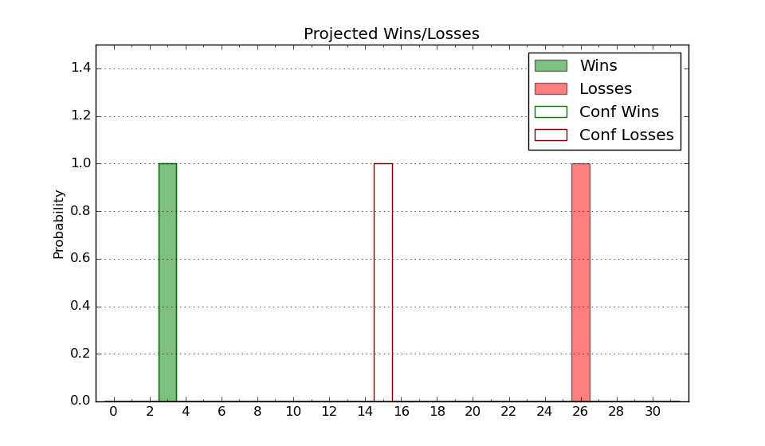

| Home | Game Probabilities | Conferences | Preseason Predictions | Odds Charts | NCAA Tournament |
| City: | Charleston, Illinois | |
| Conference: | Ohio Valley (10th)
| |
| Record: | 3-15 (Conf) 3-26 (Overall) | |
| Ratings: | Comp.: -28.8 (356th) Net: -28.8 (356th) Off: 81.2 (357th) Def: 110.1 (306th) SoR: 0.0 (157th) |
| Remaining | ||||||
|---|---|---|---|---|---|---|
| Date | Opponent | Win Prob | Pred. | |||
| Previous | Game Score | |||||
| Date | Opponent | Win Prob | Result | Off | Def | Net |
| 11/9 | @Northwestern (69) | 0.9% | L 56-80 | 7.4 | 5.9 | 13.4 |
| 11/12 | @Saint Louis (60) | 0.8% | L 44-86 | -9.8 | -4.7 | -14.5 |
| 11/15 | Central Michigan (322) | 35.4% | L 61-62 | -5.1 | 8.9 | 3.8 |
| 11/22 | @Eastern Kentucky (252) | 6.4% | L 43-82 | -29.0 | 4.9 | -24.1 |
| 11/24 | (N) Albany (281) | 13.9% | L 62-64 | 12.7 | 3.1 | 15.8 |
| 11/28 | Evansville (313) | 32.2% | L 54-70 | -4.3 | -15.0 | -19.3 |
| 12/1 | @Northern Illinois (304) | 9.8% | L 45-55 | -12.0 | 18.5 | 6.5 |
| 12/7 | @Missouri (166) | 3.0% | L 44-72 | -10.2 | -1.1 | -11.3 |
| 12/11 | @Butler (121) | 2.0% | L 54-66 | 11.4 | 5.4 | 16.9 |
| 12/18 | @Western Illinois (229) | 5.0% | L 54-71 | -2.4 | 3.5 | 1.1 |
| 12/21 | @Ball St. (264) | 7.0% | L 55-75 | -0.3 | -1.6 | -1.9 |
| 12/29 | @Morehead St. (123) | 2.0% | L 50-63 | 10.2 | 9.2 | 19.4 |
| 1/13 | SIU Edwardsville (277) | 22.4% | L 53-66 | -6.5 | 0.2 | -6.2 |
| 1/17 | Murray St. (36) | 1.9% | L 46-72 | -2.7 | 1.7 | -1.0 |
| 1/20 | @Murray St. (36) | 0.6% | L 51-91 | 11.1 | -20.1 | -9.0 |
| 1/22 | Southeast Missouri St. (251) | 18.8% | L 58-87 | -13.7 | -19.1 | -32.8 |
| 1/24 | Belmont (71) | 3.1% | L 56-90 | 3.6 | -14.5 | -10.9 |
| 1/27 | @Tennessee Martin (305) | 10.0% | W 58-53 | 10.5 | 20.2 | 30.8 |
| 1/29 | Tennessee St. (274) | 21.8% | W 62-57 | -0.4 | 15.3 | 14.9 |
| 2/5 | @Southeast Missouri St. (251) | 6.4% | L 56-63 | -6.5 | 23.3 | 16.9 |
| 2/7 | @Tennessee Tech (249) | 6.4% | L 58-84 | 6.4 | -22.7 | -16.4 |
| 2/10 | Tennessee Tech (249) | 18.8% | L 62-73 | 11.3 | -10.6 | 0.7 |
| 2/12 | Tennessee Martin (305) | 27.4% | W 82-70 | 31.5 | -4.1 | 27.4 |
| 2/14 | @Austin Peay (276) | 7.8% | L 54-62 | -1.5 | 13.4 | 11.9 |
| 2/17 | @Belmont (71) | 0.9% | L 57-81 | 9.0 | -0.3 | 8.6 |
| 2/19 | @Tennessee St. (274) | 7.6% | L 49-63 | -4.3 | 6.0 | 1.7 |
| 2/21 | @SIU Edwardsville (277) | 7.8% | L 52-66 | 1.6 | -1.5 | 0.1 |
| 2/24 | Morehead St. (123) | 6.5% | L 46-82 | -13.6 | -13.4 | -27.0 |
| 2/26 | Austin Peay (276) | 22.3% | L 52-64 | -0.9 | -7.7 | -8.6 |
| Stats & Trends | |||||
|---|---|---|---|---|---|
| Current | Day | Week | Month | Season | |
| Composite | -28.8 | -0.3 | -1.5 | +2.0 | -14.3 |
| Comp Rank | 356 | -1 | -2 | -1 | -18 |
| Net Efficiency | -28.8 | -0.3 | -1.4 | +3.7 | -- |
| Net Rank | 356 | -1 | -2 | -- | -- |
| Off Efficiency | 81.2 | -0.0 | -0.3 | +3.2 | -- |
| Off Rank | 357 | -- | -- | -- | -- |
| Def Efficiency | 110.1 | -0.3 | -1.1 | +0.4 | -- |
| Def Rank | 306 | -5 | -13 | +13 | -- |
| SoS Rank | 215 | -15 | -16 | -61 | -- |
| Exp. Wins | 3.0 | -0.2 | -0.4 | +1.8 | -5.8 |
| Exp. Conf Wins | 3.0 | -0.2 | -0.4 | +1.8 | -3.7 |
| Conf Champ Prob | 0.0 | -- | -- | -- | -0.4 |

| Advanced Stats | ||
|---|---|---|
| Stat | Value | Rank |
| Off Eff FG % | 0.434 | 349 |
| Off Ast Ratio | 0.130 | 256 |
| Off ORB% | 0.201 | 350 |
| Off TO Rate | 0.218 | 356 |
| Off FT Ratio | 0.287 | 227 |
| Def Eff FG % | 0.544 | 322 |
| Def Ast Ratio | 0.174 | 349 |
| Def ORB% | 0.329 | 331 |
| Def TO Rate | 0.157 | 210 |
| Def FT Ratio | 0.257 | 64 |